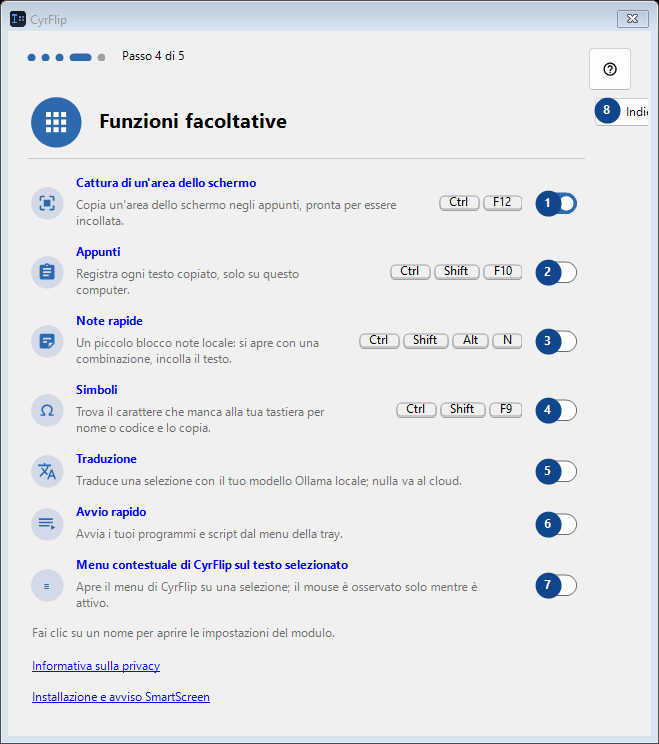
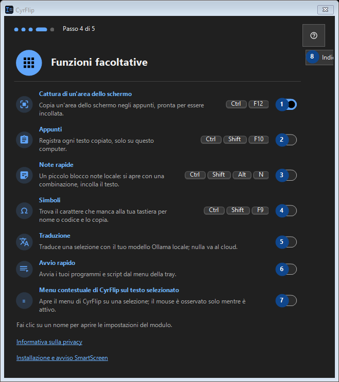

Funzioni facoltative
A cosa serve
Leggi le spiegazioni numerate, scegli i valori necessari e continua con il comando della finestra.


Ordine delle operazioni
Leggi le spiegazioni numerate, scegli i valori necessari e continua con il comando della finestra.
Elementi
1. Cattura di un'area dello schermo
Attivo
Le tue scorciatoie2. Appunti
Disattivo
Le tue scorciatoie3. Note rapide
Disattivo
Le tue scorciatoie4. Simboli
Disattivo
Le tue scorciatoie5. Traduzione
Disattivo
Le tue scorciatoie6. Avvio rapido
Disattivo
Le tue scorciatoie7. Menu contestuale di CyrFlip sul testo selezionato
Disattivo
Le tue scorciatoie8. Indietro
Usa questo comando per l’azione indicata. Leggi ogni richiesta di conferma prima di accettare.
Le tue scorciatoie9. Avanti
Usa questo comando per l’azione indicata. Leggi ogni richiesta di conferma prima di accettare.
Le tue scorciatoie10. Salta
Usa questo comando per l’azione indicata. Leggi ogni richiesta di conferma prima di accettare.
Le tue scorciatoie